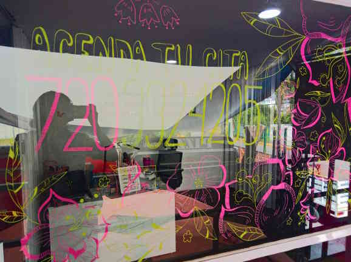
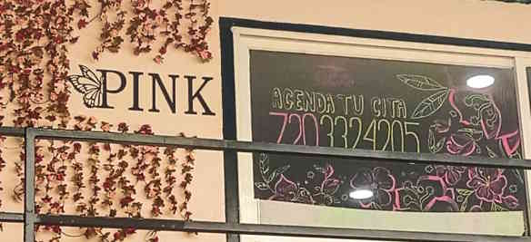
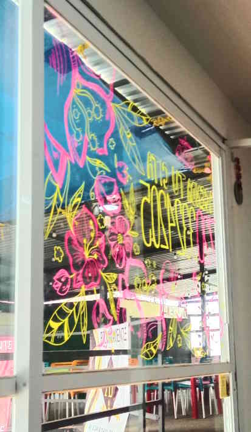
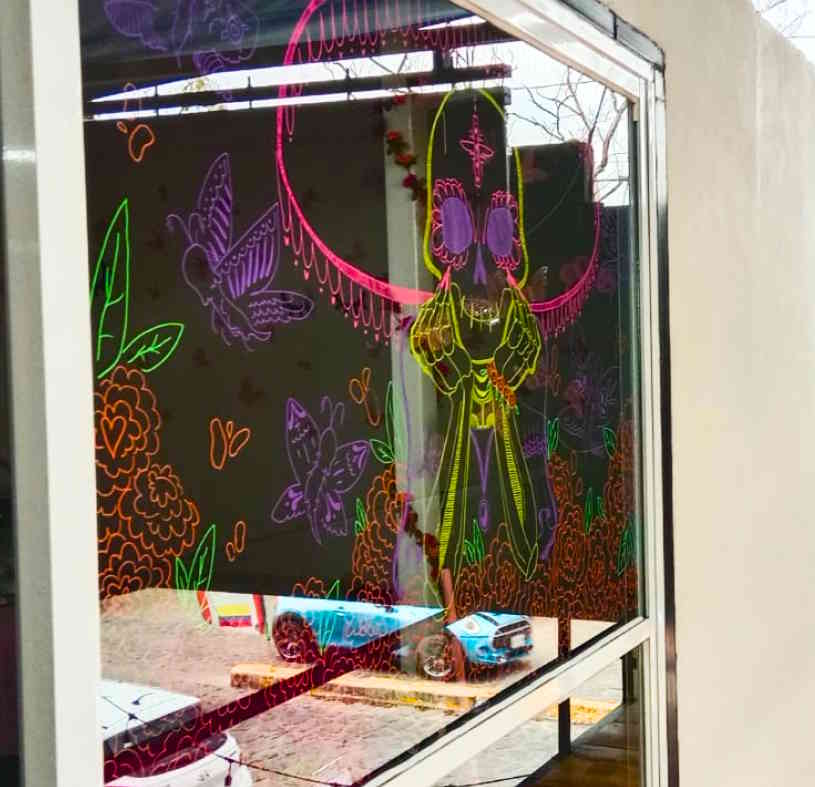
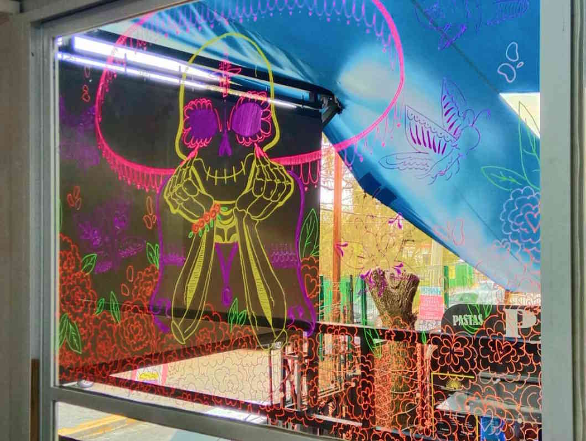

Ilustrando Ventanas

Antes de pintar las ventanas, practiqué en casa para asegurarme del trazo y estilo. Fue mi primera experiencia profesional haciendo algo que realmente sé hacer, así que el proceso fue más de intuición y práctica que de planeación formal.





En octubre regresé para hacer un nuevo dibujo, esta vez con temática del Día de Muertos. Realicé una catrina rodeada de flores de cempasúchil, polillas, y elementos de uñas y pestañas. No seguí un boceto previo; busqué referencias en internet —poses, manos, flores— y fui componiendo la imagen directamente sobre el vidrio. A pesar de que fue más detallado, lo terminé más rápido y con mejor control del trazo.


El proceso fue muy práctico y espontáneo. Al trabajar directamente sobre la superficie, aprendí a adaptarme al espacio y al tiempo, cuidando mi mano para evitar manchar o lastimarme. Fue una experiencia donde confirmé que el arte también se construye en la improvisación y la resolución rápida, especialmente cuando se trabaja en espacios reales.